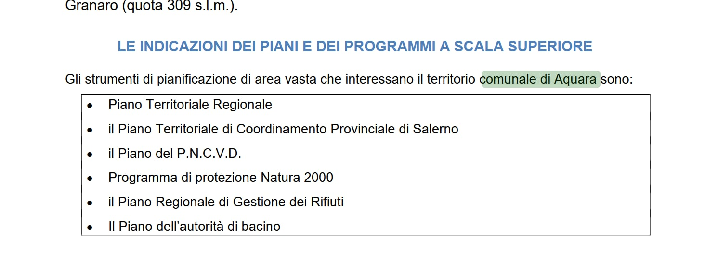
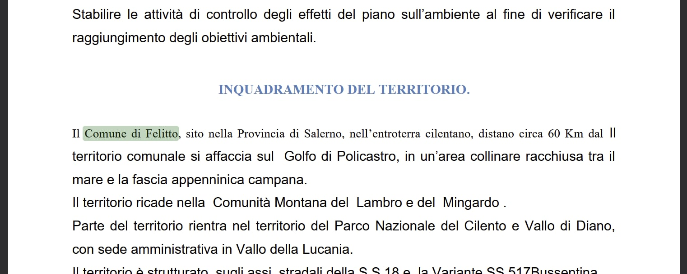
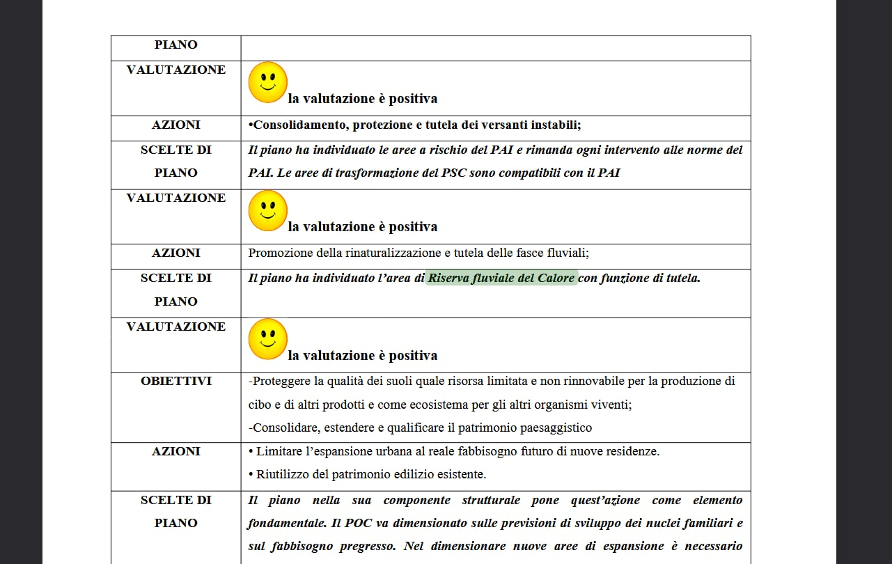

Rilievo documentale
Nel Rapporto ambientale e nella Sintesi non tecnica compaiono riferimenti territorialmente incompatibili con Santa Marina: Aquara, Felitto e la Riserva fluviale del Calore.
Data di diffusione · 10 agosto 2026
Pagina stampa indipendente per redazioni e giornalisti
Press kit
Nei documenti VAS compaiono Aquara, Felitto e la Riserva fluviale del Calore. La richiesta è una sola: verifica pubblica, tecnica e amministrativa, prima delle determinazioni finali sul PUC.
Questa pagina raccoglie materiali già pronti per la pubblicazione: cartella stampa, guida civica, immagini documentali, testo copiabile e recapiti.
In breve per la redazione
Notizia principale: negli elaborati VAS del PUC di Santa Marina compaiono riferimenti ad Aquara, Felitto e alla Riserva fluviale del Calore.
Formula da mantenere: non si sostiene che tre riferimenti errati rendano automaticamente nullo il PUC; si chiede di verificare pubblicamente se siano soltanto refusi oppure se abbiano inciso su fonti, mappe, indicatori e giudizi ambientali.
Richiesta politico-istituzionale: un confronto pubblico di carattere tecnico e amministrativo prima delle determinazioni finali.
Tono consigliato: evitare formule come “VAS copiata”, “copia-incolla dimostrato”, “PUC nullo” o “truffa”.
Sintesi editoriale
Rilievo documentale
Nel Rapporto ambientale e nella Sintesi non tecnica compaiono riferimenti territorialmente incompatibili con Santa Marina: Aquara, Felitto e la Riserva fluviale del Calore.
Chiarimento essenziale
I documenti non vengono presentati come prova automatica di invalidità del Piano. Il punto è capire pubblicamente se si tratti di meri refusi o di elementi che incidono su istruttoria e giudizi ambientali.
Richiesta finale
Prima delle determinazioni conclusive sul PUC si chiede un confronto pubblico tecnico-amministrativo con Amministrazione commissariale, uffici, progettisti e autori delle osservazioni.
Formula da mantenere
Non si sostiene che tre riferimenti errati rendano automaticamente nullo il PUC. Si chiede di verificare pubblicamente se siano soltanto refusi oppure se abbiano inciso su fonti, mappe, indicatori e giudizi ambientali.
Formulazione istituzionale
Un Piano destinato a incidere per anni sul territorio non dovrebbe essere trattato come un passaggio automatico mentre restano domande documentate su dati, VAS e capacità dei servizi. L’Amministrazione commissariale ha la responsabilità istituzionale di verificare pubblicamente se il quadro sia completo, coerente e adeguatamente motivato prima della decisione definitiva.
Download immediato
Qui trovi soltanto i materiali approvati per la diffusione del 10 agosto 2026. La bozza precedente dell’osservazione VAS non è inclusa.
Documento principale
Versione PDF completa con impostazione editoriale, rilievi documentali, richieste e nota per le redazioni.
Contesto civico
Supporto di contesto per comprendere le quattro osservazioni e il quadro generale del procedimento.
Testo copiabile
Versione .txt pronta da copiare in email, CMS o documenti interni di redazione.
Testo copiabile
Testo autonomo della richiesta politica-istituzionale formulata in termini tecnici e amministrativi.
Documenti e osservazioni
Visuali per pubblicazione rapida
Le immagini sono già contestualizzate nella cartella stampa, ma qui sono disponibili in formato immediato per uso redazionale.

R.06 · pagina 10
Passaggio relativo alla pianificazione sovraordinata con richiamo al “territorio comunale di Aquara”.

R.06.all.2 · pagina 5
Apertura dell’inquadramento della Sintesi non tecnica con menzione del “Comune di Felitto”.

R.06 · pagina 61
Matrice ambientale con giudizio positivo riferito alla “Riserva fluviale del Calore”, mentre le NTA disciplinano il Bussento.
Richiesta pubblica
Confronto tecnico-amministrativo
Controllo editoriale finale
Contatti
Oggetto consigliato
PUC Santa Marina: errori nella VAS e richiesta di confronto pubblico - cartella stampa
Contatto: primainumeri@proton.me
Sito: santamarina.primainumeri.it
Promotore: Prima i numeri · iniziativa civica e documentale
{kind=link}
{kind=link}
{kind=link}